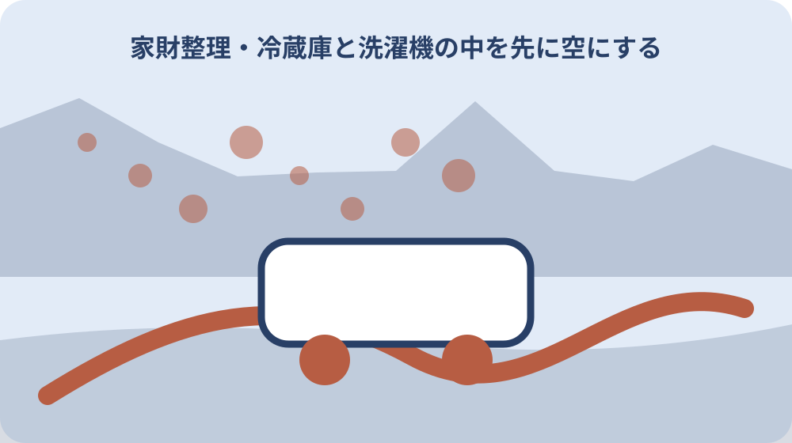
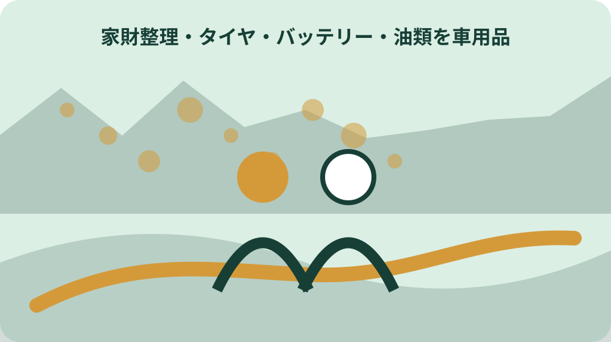

先に結論を確認する
この記事の答え：家電四品目は対象外です。購入店、協力店、指定引取場所、許可業者の案内を確認します。
森町で最初に照合する条件：部屋別に拾う前に、家電四品目、油・薬品、医療物、農業用品、事業用品の隔離場所を作る。
片付け開始前に不可品区画を作る
町収集不可品を通常ごみへ混ぜると後工程で袋や車両を開け直すことになる。片付け開始前に不可品区画を作るについて資料と現物を比べる際は、不可品区画には家電、危険物、医療系、車用品、農業用品の札を付け、通常収集へ戻す判断は品目確認後に行います。
玄関近くに家電、危険物、医療物、農業用品の区画を分ける。片付け開始前に不可品区画を作るを家族へ引き継ぐ記録では、不可品区画には家電、危険物、医療系、車用品、農業用品の札を付け、通常収集へ戻す判断は品目確認後に行います。
品名札と通し番号を付け、家族が勝手に移動しない共有ルールを決める。片付け開始前に不可品区画を作るについて担当先へ尋ねる前には、不可品区画には家電、危険物、医療系、車用品、農業用品の札を付け、通常収集へ戻す判断は品目確認後に行います。
中身不明の容器を開封したり混合したりせず隔離する。片付け開始前に不可品区画を作るで判断を急がないためには、不可品区画には家電、危険物、医療系、車用品、農業用品の札を付け、通常収集へ戻す判断は品目確認後に行います。
不可品区画には家電、危険物、医療系、車用品、農業用品の札を付け、通常収集へ戻す判断は品目確認後に行います。
家電四品目を型番まで記録する
対象はエアコン、テレビ、冷蔵庫・冷凍庫、洗濯機・衣類乾燥機である。家電四品目を型番まで記録するについて資料と現物を比べる際は、家電四品目は型番と容量で対象区分や料金が変わり得るため、銘板情報を読み取って引取先へ伝えます。
ポータブル品や付属品も対象の場合があるため外観だけで除外しない。家電四品目を型番まで記録するを家族へ引き継ぐ記録では、家電四品目は型番と容量で対象区分や料金が変わり得るため、銘板情報を読み取って引取先へ伝えます。
メーカー、型番、画面サイズや容量、設置場所を銘板写真と結ぶ。家電四品目を型番まで記録するについて担当先へ尋ねる前には、家電四品目は型番と容量で対象区分や料金が変わり得るため、銘板情報を読み取って引取先へ伝えます。
家電という大分類だけで粗大ごみ車へ積まない。家電四品目を型番まで記録するで判断を急がないためには、家電四品目は型番と容量で対象区分や料金が変わり得るため、銘板情報を読み取って引取先へ伝えます。
家電四品目は型番と容量で対象区分や料金が変わり得るため、銘板情報を読み取って引取先へ伝えます。
購入店・協力店・指定引取を比較する
森町は購入店等、町内6協力店、指定引取場所、許可業者の経路を示す。購入店・協力店・指定引取を比較するについて資料と現物を比べる際は、購入店回収、協力店、指定引取場所は運搬条件と費用が異なるため、一台ずつ選択肢と予約要否を比べます。
運搬できる車、人手、階段、取外し工事の有無で現実的な方法が変わる。購入店・協力店・指定引取を比較するを家族へ引き継ぐ記録では、購入店回収、協力店、指定引取場所は運搬条件と費用が異なるため、一台ずつ選択肢と予約要否を比べます。
各経路へ品目と型番を伝え、料金と訪問条件を同じ表で比較する。購入店・協力店・指定引取を比較するについて担当先へ尋ねる前には、購入店回収、協力店、指定引取場所は運搬条件と費用が異なるため、一台ずつ選択肢と予約要否を比べます。
協力店掲載を無料引取という意味にせず費用を確認する。購入店・協力店・指定引取を比較するで判断を急がないためには、購入店回収、協力店、指定引取場所は運搬条件と費用が異なるため、一台ずつ選択肢と予約要否を比べます。
購入店回収、協力店、指定引取場所は運搬条件と費用が異なるため、一台ずつ選択肢と予約要否を比べます。

リサイクル券と引渡証拠を残す
自己搬入では郵便局で券を購入し製品へ貼る手順が案内される。リサイクル券と引渡証拠を残すについて資料と現物を比べる際は、家電リサイクル券の控えと引渡日を対象家電へ対応させ、搬出しただけで処理完了にしません。
料金は品目、メーカー、サイズで異なり手数料も発生する。リサイクル券と引渡証拠を残すを家族へ引き継ぐ記録では、家電リサイクル券の控えと引渡日を対象家電へ対応させ、搬出しただけで処理完了にしません。
券控え、領収書、搬出前写真、引渡日を品目番号ごとに保管する。リサイクル券と引渡証拠を残すについて担当先へ尋ねる前には、家電リサイクル券の控えと引渡日を対象家電へ対応させ、搬出しただけで処理完了にしません。
家からなくなったことだけを適正処理の証明としない。リサイクル券と引渡証拠を残すで判断を急がないためには、家電リサイクル券の控えと引渡日を対象家電へ対応させ、搬出しただけで処理完了にしません。
家電リサイクル券の控えと引渡日を対象家電へ対応させ、搬出しただけで処理完了にしません。
冷蔵庫と洗濯機の中を先に空にする
大型家電は中身が残ると運搬時の漏れや臭い、重量増加につながる。冷蔵庫と洗濯機の中を先に空にするについて資料と現物を比べる際は、冷蔵庫の食品と洗濯機の水を除き、運搬時の漏れや腐敗を防いでから回収条件を確認します。
食品、氷、水、洗剤、衣類を別の分別へ移し庫内を乾燥させる。冷蔵庫と洗濯機の中を先に空にするを家族へ引き継ぐ記録では、冷蔵庫の食品と洗濯機の水を除き、運搬時の漏れや腐敗を防いでから回収条件を確認します。
電源を切る時期と取扱いは引取先へ確認し床養生を準備する。冷蔵庫と洗濯機の中を先に空にするについて担当先へ尋ねる前には、冷蔵庫の食品と洗濯機の水を除き、運搬時の漏れや腐敗を防いでから回収条件を確認します。
冷媒配管や電源工事を家族だけで外そうとしない。冷蔵庫と洗濯機の中を先に空にするで判断を急がないためには、冷蔵庫の食品と洗濯機の水を除き、運搬時の漏れや腐敗を防いでから回収条件を確認します。
冷蔵庫の食品と洗濯機の水を除き、運搬時の漏れや腐敗を防いでから回収条件を確認します。
タイヤ・バッテリー・油類を車用品群にする
タイヤとバッテリー、ガソリン、灯油、機械油は町の通常収集先ではない。タイヤ・バッテリー・油類を車用品群にするについて資料と現物を比べる際は、タイヤ、バッテリー、廃油は車用品として販売店等へ相談し、粗大ごみへ混載しません。
倉庫や車庫の奥に分散しやすく容器表示も薄れる。タイヤ・バッテリー・油類を車用品群にするを家族へ引き継ぐ記録では、タイヤ、バッテリー、廃油は車用品として販売店等へ相談し、粗大ごみへ混載しません。
種類、数量、残量、漏れ、購入先を確認して販売店等へ相談する。タイヤ・バッテリー・油類を車用品群にするについて担当先へ尋ねる前には、タイヤ、バッテリー、廃油は車用品として販売店等へ相談し、粗大ごみへ混載しません。
油を排水口へ流したり別容器へ混ぜたりしない。タイヤ・バッテリー・油類を車用品群にするで判断を急がないためには、タイヤ、バッテリー、廃油は車用品として販売店等へ相談し、粗大ごみへ混載しません。
タイヤ、バッテリー、廃油は車用品として販売店等へ相談し、粗大ごみへ混載しません。
塗料・薬品・農薬をラベルごと隔離する
塗料、農薬、化学薬品は専門業者や販売店へ相談する品目である。塗料・薬品・農薬をラベルごと隔離するについて資料と現物を比べる際は、塗料、薬品、農薬は元容器とラベルを保ち、混合や移し替えをせず、製品名と残量を相談先へ伝えます。
ラベルが処理判断の手掛かりになるため汚れても剥がさない。塗料・薬品・農薬をラベルごと隔離するを家族へ引き継ぐ記録では、塗料、薬品、農薬は元容器とラベルを保ち、混合や移し替えをせず、製品名と残量を相談先へ伝えます。
製品名、成分表示、容量、残量、容器破損を外から記録する。塗料・薬品・農薬をラベルごと隔離するについて担当先へ尋ねる前には、塗料、薬品、農薬は元容器とラベルを保ち、混合や移し替えをせず、製品名と残量を相談先へ伝えます。
臭いを確認するために開けず、子どもやペットから離す。塗料・薬品・農薬をラベルごと隔離するで判断を急がないためには、塗料、薬品、農薬は元容器とラベルを保ち、混合や移し替えをせず、製品名と残量を相談先へ伝えます。
塗料、薬品、農薬は元容器とラベルを保ち、混合や移し替えをせず、製品名と残量を相談先へ伝えます。
注射針と医療用品を一般袋へ入れない
注射針は受け取った病院や薬局へ相談するよう町が案内する。注射針と医療用品を一般袋へ入れないについて資料と現物を比べる際は、注射針など鋭利な医療系廃棄物は一般袋へ入れず、処方元の医療機関や薬局へ安全な返却方法を尋ねます。
袋の外から触れてけがをする危険があるため発見時点で作業を止める。注射針と医療用品を一般袋へ入れないを家族へ引き継ぐ記録では、注射針など鋭利な医療系廃棄物は一般袋へ入れず、処方元の医療機関や薬局へ安全な返却方法を尋ねます。
処方元が分かる袋や手帳を探し、容器の扱いを医療機関へ尋ねる。注射針と医療用品を一般袋へ入れないについて担当先へ尋ねる前には、注射針など鋭利な医療系廃棄物は一般袋へ入れず、処方元の医療機関や薬局へ安全な返却方法を尋ねます。
素手で拾ったり針を折ったりせず安全確保を優先する。注射針と医療用品を一般袋へ入れないで判断を急がないためには、注射針など鋭利な医療系廃棄物は一般袋へ入れず、処方元の医療機関や薬局へ安全な返却方法を尋ねます。
注射針など鋭利な医療系廃棄物は一般袋へ入れず、処方元の医療機関や薬局へ安全な返却方法を尋ねます。
パソコンと携帯のデータを先に消す
森町役場は家庭用パソコン、携帯等を無料回収するが地区収集では扱わない。パソコンと携帯のデータを先に消すについて資料と現物を比べる際は、パソコンや携帯は回収方法を決める前にデータ移行と消去を行い、アカウント解除の完了も確認します。
物理的搬出より前に写真、連絡先、保存書類、アカウントを確認する必要がある。パソコンと携帯のデータを先に消すを家族へ引き継ぐ記録では、パソコンや携帯は回収方法を決める前にデータ移行と消去を行い、アカウント解除の完了も確認します。
端末番号、所有者、初期化日、バックアップ先を台帳へ残す。パソコンと携帯のデータを先に消すについて担当先へ尋ねる前には、パソコンや携帯は回収方法を決める前にデータ移行と消去を行い、アカウント解除の完了も確認します。
電源が入らない端末を消去済みとせず回収先へ相談する。パソコンと携帯のデータを先に消すで判断を急がないためには、パソコンや携帯は回収方法を決める前にデータ移行と消去を行い、アカウント解除の完了も確認します。
パソコンや携帯は回収方法を決める前にデータ移行と消去を行い、アカウント解除の完了も確認します。

充電式電池を機器から外して分ける
森町は施設火災防止のため充電式電池を機器から外すよう案内する。充電式電池を機器から外して分けるについて資料と現物を比べる際は、充電式電池は端子を保護し、膨張や破損があれば無理に機器から外さず、回収先へ状態を伝えます。
電話、カメラ、ゲーム機、工具など見落としやすい機器に内蔵される。充電式電池を機器から外して分けるを家族へ引き継ぐ記録では、充電式電池は端子を保護し、膨張や破損があれば無理に機器から外さず、回収先へ状態を伝えます。
膨張、発熱、破損の有無を見て安全な回収方法を確認する。充電式電池を機器から外して分けるについて担当先へ尋ねる前には、充電式電池は端子を保護し、膨張や破損があれば無理に機器から外さず、回収先へ状態を伝えます。
無理な分解や端子同士の接触を避け、回収ボックス条件に従う。充電式電池を機器から外して分けるで判断を急がないためには、充電式電池は端子を保護し、膨張や破損があれば無理に機器から外さず、回収先へ状態を伝えます。
充電式電池は端子を保護し、膨張や破損があれば無理に機器から外さず、回収先へ状態を伝えます。
事業用・農業用を家庭ごみから外す
事業系一般廃棄物、産業廃棄物、農業用機械や資材は家庭収集と別に相談する。事業用・農業用を家庭ごみから外すについて資料と現物を比べる際は、事業や農業で使った品は家庭ごみの分別表だけで判断せず、排出者区分と専門処理先を確認します。
実家にある物でも事業や農業で使った履歴によって処理区分が変わり得る。事業用・農業用を家庭ごみから外すを家族へ引き継ぐ記録では、事業や農業で使った品は家庭ごみの分別表だけで判断せず、排出者区分と専門処理先を確認します。
使用目的、購入者、材質、残留物を聞き取り、許可業者へ示す。事業用・農業用を家庭ごみから外すについて担当先へ尋ねる前には、事業や農業で使った品は家庭ごみの分別表だけで判断せず、排出者区分と専門処理先を確認します。
家庭敷地に保管されていたことだけで家庭ごみと決めない。事業用・農業用を家庭ごみから外すで判断を急がないためには、事業や農業で使った品は家庭ごみの分別表だけで判断せず、排出者区分と専門処理先を確認します。
事業や農業で使った品は家庭ごみの分別表だけで判断せず、排出者区分と専門処理先を確認します。
大石の視点：価値判断より危険物抽出を先にする
対象品目と処理経路は公的資料で確認できる事実である。大石の視点：価値判断より危険物抽出を先にするについて資料と現物を比べる際は、危険物を価値判断より先に抜き出すという私見は、公的な分別区分と安全案内を優先した上での作業順です。
私は実家整理では売れるか捨てるかの議論より危険物と不可品の抽出を先に行う。大石の視点：価値判断より危険物抽出を先にするを家族へ引き継ぐ記録では、危険物を価値判断より先に抜き出すという私見は、公的な分別区分と安全案内を優先した上での作業順です。
不可品台帳ができれば見積比較や家族分担が進み残す品の判断も落ち着いてできる。大石の視点：価値判断より危険物抽出を先にするについて担当先へ尋ねる前には、危険物を価値判断より先に抜き出すという私見は、公的な分別区分と安全案内を優先した上での作業順です。
これは私見であり、個別品の処理区分は森町や許可業者へ確認する。大石の視点：価値判断より危険物抽出を先にするで判断を急がないためには、危険物を価値判断より先に抜き出すという私見は、公的な分別区分と安全案内を優先した上での作業順です。
危険物を価値判断より先に抜き出すという私見は、公的な分別区分と安全案内を優先した上での作業順です。